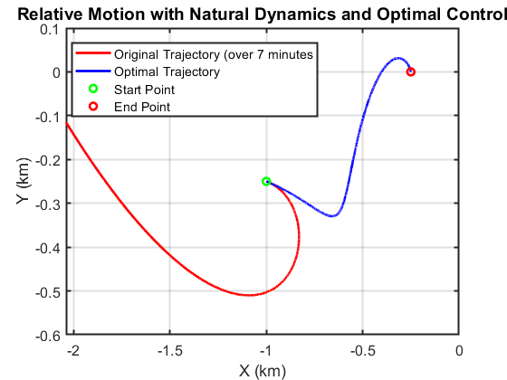
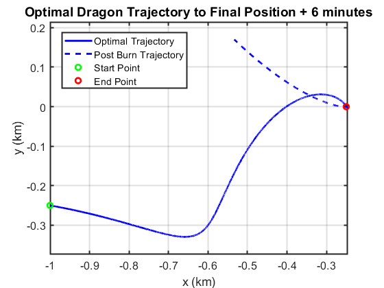
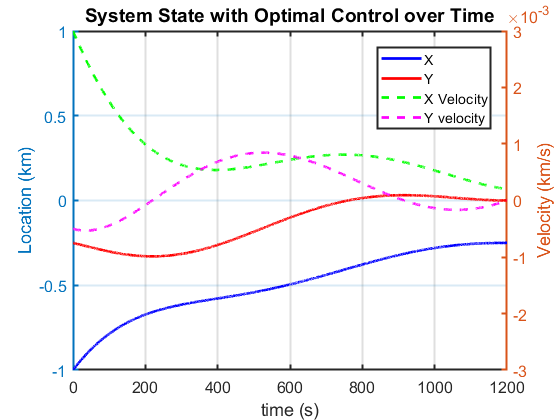
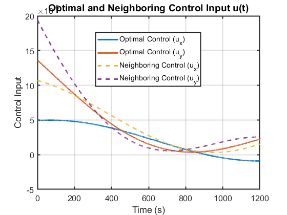
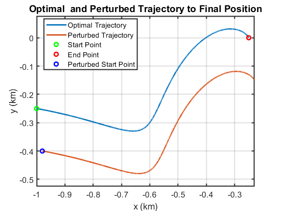
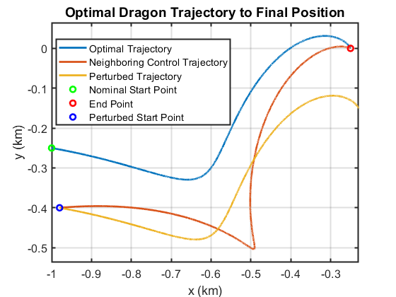
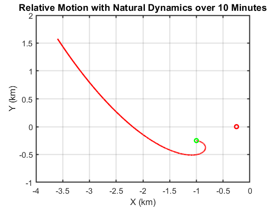
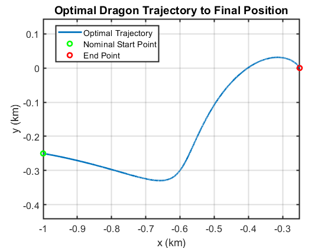
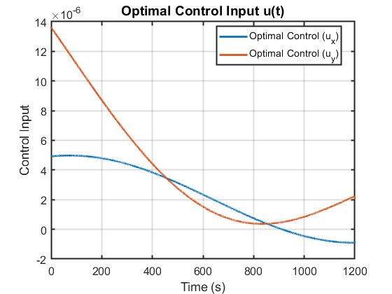

% ASEN 6015 % MIDTERM EXAM % Nicole James % 10/10/24 % Problem 1 clear clc close all set(0,'DefaultAxesXGrid','on', ... 'DefaultAxesYGrid','on', ... 'DefaultLineLineWidth',2, ... 'DefaultAxesLineWidth',1.5); set(groot, 'defaultAxesFontSize',12, ... 'defaultTextFontSize',12, ... 'defaultLegendFontSize',14, ... 'defaultAxesTitleFontSizeMultiplier', 1.5, ... 'defaultAxesTitleFontSizeMultiplier', 1.2); % constants mu = 3.986004418e5; a = 3728; % semi-major axis of ISS n = sqrt(mu/a^3); % mean motion of ISS dt = 0.1; % timestep tfinal = 60*20; tsim = 0:dt:tfinal; % function signatures % STMs for the Clohessy-Wiltshire equations Phirr = @(t) [4-3*cos(n*t), 0; 6*(sin(n*t)-n*t), 1]; Phirv = @(t) [sin(n*t)/n, 2*(1-cos(n*t))/n; 2*(cos(n*t) -1)/n, (4*sin(n*t) - 3*n*t)/n]; Phivr = @(t) [3*n*sin(n*t), 0; 6*n*(cos(n*t)-1), 0]; Phivv = @(t) [cos(n*t), 2*sin(n*t); -2*sin(n*t), 4*cos(n*t)-3]; PHI = @(t)[Phirr(t) Phirv(t); Phivr(t) Phivv(t)]; Phi_tf = [Phirr(tfinal) Phirv(tfinal); Phirv(tfinal) Phivv(tfinal)]; % at final time to find delta-v %initial conditions x0 = -1.0; y0 = -0.25; xdot0 = 0.003; ydot0 = -0.0005; X0 = [x0; y0; xdot0; ydot0]; % final conditions xf = -0.25; yf = 0.; xdotf = 0.0002; ydotf = 0.; Xf = [xf; yf; xdotf; ydotf]; r0 = [x0;y0]; v0 = [xdot0;ydot0]; rf = [xf;yf]; vf = [xdotf;ydotf]; % State space matrices % xddot - 2*n*ydot - 3*n^2*x = ux % yddot + 2*n*xdot = uy % X = [x; y; xdot; ydot] % x_hat in r_hat direction; y_hat in v_hat direction % u = [ux; uy] u0 = [0;0;]; A = [0 0 1 0; 0 0 0 1; 3*n^2 0 0 2*n; 0 0 -2*n 0] B = [0 0; 0 0; 1 0; 0 1]; % Find STM for dynamic system Phi0 = expm(A*dt) % use matrix exponential A is constant Phidot0 = A*Phi0 % find and plot natural dynamics [tout, dynstate] = ode45(@(t,dynstate) cworbit(dynstate,n), 0:dt:tfinal, X0); % find closest approach and time for i = 1:length(dynstate) r(i) = sqrt(dynstate(i,1)^2 + dynstate(i,2)^2); end rmin = min(r) tmin = tout(r==rmin) % Problem 2 % optimal control R = [1 0; 0 1]; Astar = [A B*B';zeros(4) -A']; Phistar = expm(Astar); Phistardot = Astar * Phistar; % k0 = zeros(4); % need to integrate backwards to find K tbw = flip(tsim); % Optimal trajectory simulation Q=zeros(4); Kf = eye(4); [tkout,kout] = ode45(@(t,k) Kdot(k,A,B,Q),tbw,Kf); % find history of K kout = reshape(kout.',4,4,[]); tkout = flip(tkout); xstar(:,1) = X0-Xf; % OPTIMAL CONTROL for i = 1:length(tkout) % e = xstar(:,i)-Xf; rstar(i) = norm(xstar(1,i),xstar(2,i)); xactual(:,i) = xstar(:,i) + Xf; k = kout(:,:,length(tkout)+1-i); ustar = -B'*k; Ut(i,:) = ustar*xstar(:,i) ; xdotstar(:,i) = A*(xstar(:,i)) + B*Ut(i,:)';% xstar(:,i+1) = xstar(:,i) + xdotstar(:,i)*dt; % calc cost ... end % natural dynamics after reaching target position (+ 6 minutes) [tpost,statepost] = ode45(@(tpost,statepost) cworbit(statepost,n), tfinal:dt:tfinal+360,xactual(:,end)); % find initial value of lamba by backwards integration Qf = eye(4); % Final state weighting matrix tf = 1200; % Final time (s) % Final costate lambda_T = Qf * Xf; % Xf = final state as defined in problem % Solve backward in time for lambda [t, lambda] = ode45(@(t, lambda) costate_dynamics(t, lambda, A), [tf 0], lambda_T); % Initial costate (lambda0) lambda0 = lambda(end, :)'; disp('Initial Lagrange multiplier (lambda0):'); disp(lambda0); % Problem 3 x0e = -0.98; y0e = -0.4; dxfe = 0.0037; dyfe = 0.0003; X0e = [x0e; y0e; dxfe; dyfe]; pert = X0e - X0; % OPTIMAL CONTROL + INITIAL STATE DEVIAION xstarp(:,1) = X0e-Xf; for i = 1:length(tkout) xactualp(:,i) = xstarp(:,i) + Xf; % shift from final point as origin k = kout(:,:,length(tkout)+1-i); ustar = -B'*k; Utp(i,:) = ustar*xstar(:,i); xdotstarp(:,i) = A*(xstar(:,i)) + B*Utp(i,:)';% xstarp(:,i+1) = xstarp(:,i) + xdotstarp(:,i)*dt; end % NEIGHBORING OPTIMAL CONTROL xstarn(:,1) = X0e-Xf; for i = 1:length(tkout) xactualn(:,i) = xstarn(:,i) + Xf; dx = xstarn(:,i) - xstar(:,i); k = kout(:,:,length(tkout)+1-i); ustar = -B'*k; Utn(i,:) = ustar*xstar(:,i) + B'*k*(xstarn(:,i) - xstar(:,i)) ; xdotstarn(:,i) = A*(xstar(:,i)+dx) -B*B'*k*xstar(:,i) -B*B'*k*dx;% xstarn(:,i+1) = xstarn(:,i) + xdotstarn(:,i)*dt; % calc cost ... end % plots figure(1); plot(dynstate(1:4200,1), dynstate(1:4200,2), 'r', 'DisplayName', 'Original Trajectory (over 7 minutes'); hold on; plot(xactual(1,:),xactual(2,:),'b','DisplayName','Optimal Trajectory') plot(r0(1), r0(2), 'go', 'DisplayName', 'Start Point'); plot(rf(1), rf(2),'ro', 'DisplayName', 'End Point'); xlabel('X (km)'); ylabel('Y (km)'); title('Relative Motion with Natural Dynamics and Optimal Control'); legend('Location','best'); hold off; figure(2) % plot red circle at origin plot(xactual(1,:),xactual(2,:),'b','DisplayName','Optimal Trajectory') hold on plot(statepost(:,1),statepost(:,2),'b--', 'DisplayName','Post Burn Trajectory'); hold on plot(r0(1), r0(2), 'go', 'DisplayName', 'Start Point'); plot(rf(1), rf(2),'ro', 'DisplayName', 'End Point'); title('Optimal Dragon Trajectory to Final Position + 6 minutes'); xlabel('x (km)'), ylabel('y (km)') axis equal legend('Location','best'); hold off figure(3) yyaxis left; plot(tsim,xactual(1,1:end)','b-',tsim,xactual(2,1:end),'r-') ylim([-1 1]); ylabel('Location (km)') hold on yyaxis right; plot(tsim,xactual(3,1:end)','g--',tsim,xactual(4,1:end),'m--') legend('X','Y', 'X Velocity', 'Y velocity', 'Location','best'); ylim([-0.003 0.003]); title('System State with Optimal Control over Time') xlabel('time (s)'); ylabel('Velocity (km/s)') hold off figure(4) plot(tkout,Ut) hold on plot(tkout,Utn,'--') title('Optimal and Neighboring Control Input u(t)') legend('Optimal Control (u_x)','Optimal Control (u_y)','Neighboring Control (u_x)','Neighboring Control (u_y)','Location','best') xlabel('Time (s)'); ylabel('Control Input') hold off figure(5) % plot red circle at origin plot(xactual(1,:),xactual(2,:),'DisplayName','Optimal Trajectory'); hold on plot(xactualp(1,:),xactualp(2,:),'DisplayName','Perturbed Trajectory') plot(r0(1), r0(2), 'go', 'DisplayName', 'Start Point'); plot(rf(1), rf(2),'ro', 'DisplayName', 'End Point'); plot(xactualp(1,1), xactualp(2,2),'bo', 'DisplayName', 'Perturbed Start Point'); title('Optimal and Perturbed Trajectory to Final Position'); xlabel('x (km)'), ylabel('y (km)') axis equal legend('Location','best'); hold off figure(6) % plot red circle at origin plot(xactual(1,:),xactual(2,:),'DisplayName','Optimal Trajectory'); hold on plot(xactualn(1,:),xactualn(2,:),'DisplayName','Neighboring Control Trajectory') plot(xactualp(1,:),xactualp(2,:),'DisplayName','Perturbed Trajectory'); plot(r0(1), r0(2), 'go', 'DisplayName', 'Nominal Start Point'); plot(rf(1), rf(2),'ro', 'DisplayName', 'End Point'); plot(x0e, y0e, 'bo', 'DisplayName', 'Perturbed Start Point'); title('Optimal Dragon Trajectory to Final Position'); xlabel('x (km)'), ylabel('y (km)') axis equal legend('Location','best'); hold off figure(7); plot(dynstate(1:6000,1), dynstate(1:6000,2), 'r'); hold on; plot(r0(1), r0(2), 'go', 'DisplayName', 'Start Point'); plot(rf(1), rf(2),'ro', 'DisplayName', 'End Point'); xlabel('X (km)'); ylabel('Y (km)'); title('Relative Motion with Natural Dynamics over 10 Minutes'); figure(8) % plot red circle at origin plot(xactual(1,:),xactual(2,:),'DisplayName','Optimal Trajectory'); hold on plot(r0(1), r0(2), 'go', 'DisplayName', 'Nominal Start Point'); plot(rf(1), rf(2),'ro', 'DisplayName', 'End Point'); title('Optimal Dragon Trajectory to Final Position'); xlabel('x (km)'), ylabel('y (km)') axis equal legend('Location','best'); hold off figure(9) plot(tkout,Ut) title('Optimal Control Input u(t)') legend('Optimal Control (u_x)','Optimal Control (u_y)','Location','best') xlabel('Time (s)'); ylabel('Control Input') hold off % FUNCTIONS % CW dynamics function function dy = cworbit(y,n) dy=zeros(4,1); dy(1)=y(3); dy(2)=y(4); dy(3)=2*n*y(4)+3*n^2*y(1) ; dy(4)=-2*n*y(3) ; end % K matrix equation function dk = Kdot(K,A,B,Q) k = reshape(K,size(A)); kdot = -k*A + k*B*B'*k - A'*k -Q; dk = kdot(:); end % Costate dynamics function function dLambda = costate_dynamics(t, lambda, A) dLambda = -A' * lambda; end
A =
0 0 1.0000 0
0 0 0 1.0000
0.0000 0 0 0.0055
0 0 -0.0055 0
Phi0 =
1.0000 0 0.1000 0.0000
-0.0000 1.0000 -0.0000 0.1000
0.0000 0 1.0000 0.0006
-0.0000 0 -0.0006 1.0000
Phidot0 =
0.0000 0 1.0000 0.0006
-0.0000 0 -0.0006 1.0000
0.0000 0 -0.0000 0.0055
-0.0000 0 -0.0055 -0.0000
rmin =
0.9051
tmin =
90.8000
Initial Lagrange multiplier (lambda0):
-1.7369
0
16.7402
-357.3960








